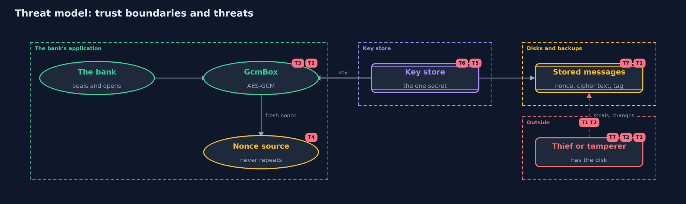

Threat Model — Symmetric Encryption (AES-GCM)
A threat model answers four questions: what are we protecting, who or what could harm it, how, and what do we do about it. This one covers this project's own demo system, not a production deployment. Domain: an online bank.
Scope
An online bank's stored account statements, encrypted by the application before they are stored: the choice of mode, the nonces, the associated data, the key, and the messages on disk and in backups. It covers a thief who reads a disk, and one who changes a file. It does not cover who is allowed to ask the application for a statement, or how the key is stored and rotated.
What we protect (assets)
- The contents of each statement.
- The integrity of each statement.
- The encryption key.
- The record of which nonces have been used.
Who and what acts on the system
- The bank's application, which seals and opens messages.
- A thief who copies a disk or a backup.
- An attacker who can change or move stored messages.
- An attacker who sees two messages made with the same nonce.
Trust boundaries
A trust boundary is a line that data or a request crosses between parts that trust each other differently. Threats cluster where those lines are.
- Application to disk: messages leave the application only as nonce, cipher text and tag.
- Key store to application: the key must reach the application and nowhere else.
- Account to account: associated data stops one account's message being used for another.

Each dashed box is a trust boundary. A rose tag such as T1 shows where the threat of that number, in the table below, applies.
Threats, using STRIDE
STRIDE is a checklist of six kinds of threat: Spoofing (S), Tampering (T), Repudiation (R), Information disclosure (I), Denial of service (D), Elevation of privilege (E).
| Id | Kind | Threat | Where it shows up | Control in this project | What is left |
|---|---|---|---|---|---|
| T1 | Information disclosure | A thief reads statements from a disk or a backup | stored messages | AES-GCM hides the contents, so the disk holds only cipher text | The length of each message still shows, and the key must not be on the same disk |
| T2 | Tampering | Someone changes a stored message, or moves it to another account | GcmBox.open |
The tag covers the cipher text, nonce and associated data, so any change or move is refused | An attacker can still delete a message, or replace it with an older valid one for the same account |
| T3 | Information disclosure | Patterns in the data show through the cipher text | EcbCipher |
Use GCM, not ECB, so equal blocks give different cipher text | Message lengths and timing can still leak something |
| T4 | Information disclosure | A nonce is reused and an attacker recovers one message from another | NonceSource |
A fresh nonce for every message, from RandomNonces or a carefully kept counter |
Random nonces may repeat near 2^32 messages under one key; replace the key before that |
| T5 | Information disclosure | The key is read by someone who should not have it | the key store | None in this project; the key is kept apart from the data | Whoever holds the key reads everything, so it must be guarded and its use logged |
| T6 | Denial of service | The key is lost, and with it every message | the key store | None in this project | Back up the key separately from the data, and test that the backup works |
| T7 | Repudiation | Anyone with the key can make a valid message, so nobody can tell who made it | GcmBox |
None with a shared key | Digital signatures give each maker an identity; a later project covers them |
Assumptions
- The attacker does not have the key.
- The application's memory is not itself compromised.
- In the demo, keys and nonces are fixed values. Real systems use a random key from a key store and never repeat a nonce.
Out of scope
- Key generation, storage, rotation and destruction: the keystore-basics project.
- Who may open a statement: authorization, in the identity module.
- Traffic analysis, which can use message sizes and timing.
How the tests check this
StandardVectorsTestchecks AES and GCM against FIPS 197 and the original GCM specification.EcbTestshows ECB keeps the repeats of the plain text.GcmBoxTestshows a changed bit, tag, nonce, associated data or key all makeopenfail, and the overhead is 28 bytes.NonceReuseTestshows an attacker who knows one message recovers another when a nonce is reused, and not when nonces are fresh.
Where this model goes next
The next project, asymmetric-encryption, solves the problem that this one leaves: how two parties who have never met can agree on a key.